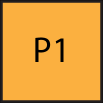
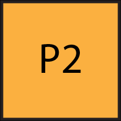

|  | Try to create a game. |
|---|
At Georgia Tech, my major involves a few courses related to Game Design. Those examples include Game AI, Interaction Design, and Digital Art. It's difficult, but if I can know the content well enough, as well as getting ahold of game englines such as Unreal, I think it's possible that I can make a good game during my free time.
However, I don't plan on getting a job related to game development for reasons I won't disclose.
|  | Improve on my Video Production Skills. |
|---|
One of the courses that is offered at Georgia Tech is LMC 3406, a video production course. This course can be used as one of the three CM-based LMC courses for my major. Video editing has been in my bucketlist for quite a while, but it's hard to get it correctly.